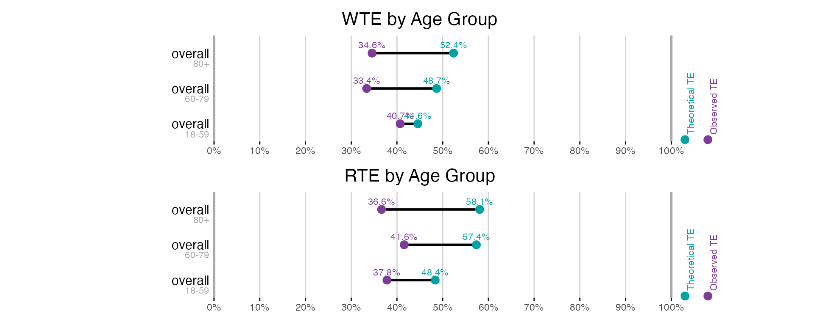

Waiting Time vs. Rank-based Triage Effectiveness
Source:vignettes/calc_wte_rte.Rmd
calc_wte_rte.Rmd
library(trieff)
#> Loaded trieff 1.2.0
library(dplyr)
#>
#> Attaching package: 'dplyr'
#> The following objects are masked from 'package:stats':
#>
#> filter, lag
#> The following objects are masked from 'package:base':
#>
#> intersect, setdiff, setequal, union
library(ggplot2)Introduction
The trieff package offers two complementary approaches for calculating Triage Effectiveness (TE):
Waiting Time-based TE (WTE): Measures how well triage reduces the actual waiting time for time-critical patients.
Rank-based TE (RTE): Evaluates how effectively triage improves queue positions for time-critical patients.
This vignette demonstrates how to use both methods, compares their results, and explains when to use each approach.
Prerequisites
- Initialized data (see
vignette("getting_started")) - Simulated theoretical wait times (see
vignette("sim_te")), only required if theoretical TE is of interest.
Basic Usage
Let’s start by initializing our data and running the simulation to get theoretical wait times:
# Initialize the data
data <- load_sem_synth() %>%
init()
# Run simulation to get theoretical wait times
data <- sim_te(data)
#> [1] "Filtered to 1044 segments with LOSET cases"
#> [1] "Total LOSET cases: 3843"
#> [1] "Starting multisession with 1 cores. 2025-06-12 12:43:07.893043"
#> [1] "Simulations are done! 2025-06-12 12:43:10.959503"Waiting Time-based TE (WTE)
First, let’s calculate WTE metrics:
# Calculate WTE metrics
wte_results <- calc_wte(data, overall_only = TRUE)
# Print results
print(wte_results)
#>
#> Triage Effectiveness Analysis Results
#> ===================================
#>
#> Results for Overall
#> -------------------
#> Total patients: 53265 (7.2% LOSET positive)
#>
#> Classification Metrics:
#> Sensitivity: 64.3%
#> Specificity: 73.3%
#>
#> Triage Effectiveness Metrics:
#> OTE: 36.3%
#> TTE: 49.1%
#> OTG: -12.8%
#>
#> Computation Information
#> =====================
#> Method: Direct calculation (waiting-time-based)
#> Calculation time: 2025-06-12 12:43:11.220976Rank-based TE (RTE)
Now, let’s calculate RTE metrics using the same data:
# Calculate RTE metrics
rte_results <- calc_rte(data, overall_only = TRUE)
#> [1] "Processing 2 units with LOSET cases in parallel 2025-06-12 12:43:11.708082"
#> Warning in serialize(data, node$con, xdr = FALSE): 'package:ggplot2' may not be
#> available when loading
#> Warning in serialize(data, node$con, xdr = FALSE): 'package:ggplot2' may not be
#> available when loading
#> Warning in serialize(data, node$con, xdr = FALSE): 'package:ggplot2' may not be
#> available when loading
#> Warning in serialize(data, node$con, xdr = FALSE): 'package:ggplot2' may not be
#> available when loading
#> [1] "Processing unit: C 2025-06-12 12:43:12.612343"
#> [1] "Processing unit: E 2025-06-12 12:43:13.439037"
# Print results
print(rte_results)
#>
#> Triage Effectiveness Analysis Results
#> ===================================
#>
#> Results for Overall
#> -------------------
#> Total patients: 53265 (7.2% LOSET positive, 3529 valid for RTE)
#>
#> Classification Metrics:
#> Sensitivity: 64.3%
#> Specificity: 73.1%
#>
#> Rank-based Triage Effectiveness Metrics:
#> OTE: 39.1%
#> TTE: 55.2%
#> OTG: -16.1%
#>
#> Confidence Intervals (95%):
#> OTE: 39.1% (-233.3% to 100.0%)
#> TTE: 55.2% (-107.3% to 100.0%)
#> OTG: -16.1%
#>
#> Computation Information
#> =====================
#> Method: Rank-based triage effectiveness calculation
#> Confidence intervals: Nonparametric method
#> Calculation time: 2025-06-12 12:43:13.922906Note that we are using the argument ‘overall_only = TRUE’ in both examples above. This returns only the overall TE value for the ED. Trieff calculates this based on units that represents separate queues. For example if the ED has separate queues for medical or surgical patients.
Comparing the Results
Let’s create a visual comparison of the two methods:
# Create plots for comparison
wte_plot <- plot_te(wte_results, title = "Waiting Time-based TE (WTE)")
rte_plot <- plot_te(rte_results, title = "Rank-based TE (RTE)", ci_vars_override = "none")
# Display plots one below the other using patchwork
patchwork::wrap_plots(wte_plot, rte_plot, ncol = 1)
Note that we are overriding confidence intervals to not be show with the
argument ci_vars_override = “none”. The reason for this can be found in
the print statement above. calc_rte will recommend confidence interval
based on a Shapiro test. Since queue position is not generally normally
distributed it will recommend “non_parametric” which produces very wide
confidence intervals. An alternative will be introduced further bellow
with bootstrapping and further explored in the
vignette("bootstrap")
Subgroup Analysis
Both methods support subgroup analysis. Let’s compare them using age groups:
# Create age groups
data <- data %>%
mutate(age_group = cut(age_at_arrival,
breaks = c(0, 59, 79, Inf),
labels = c("18-59", "60-79", "80+")))
# Calculate WTE and RTE by age group
wte_age <- calc_wte(data, var1 = "age_group", overall_only = TRUE)
rte_age <- calc_rte(data, var1 = "age_group", overall_only = TRUE)
#> [1] "Processing 2 units with LOSET cases in parallel 2025-06-12 12:43:14.707643"
#> Warning in serialize(data, node$con, xdr = FALSE): 'package:ggplot2' may not be
#> available when loading
#> Warning in serialize(data, node$con, xdr = FALSE): 'package:ggplot2' may not be
#> available when loading
#> Warning in serialize(data, node$con, xdr = FALSE): 'package:ggplot2' may not be
#> available when loading
#> Warning in serialize(data, node$con, xdr = FALSE): 'package:ggplot2' may not be
#> available when loading
#> [1] "Processing unit: C 2025-06-12 12:43:15.545011"
#> [1] "Processing unit: E 2025-06-12 12:43:16.35852"
# Create comparison plots
wte_age_plot <- plot_te(wte_age, title = "WTE by Age Group")
rte_age_plot <- plot_te(rte_age, title = "RTE by Age Group", ci_vars_override = "none")
# Display plots
patchwork::wrap_plots(wte_age_plot, rte_age_plot, ncol = 1)
Bootstrap Analysis
Both methods support bootstrap confidence interval generation:
# Calculate with bootstrap
wte_bootstrap <- calc_wte(data,
bootstrap = TRUE,
overall_only = TRUE)
#> [1] "Starting bootstrap iterations 2025-06-12 12:43:17.45036"
#> [1] "Bootstrap iterations done 2025-06-12 12:43:32.245907"
rte_bootstrap <- calc_rte(data,
bootstrap = TRUE,
overall_only = TRUE)
#> [1] "Processing 2 units with LOSET cases in parallel 2025-06-12 12:43:32.879703"
#> Warning in serialize(data, node$con, xdr = FALSE): 'package:ggplot2' may not be
#> available when loading
#> Warning in serialize(data, node$con, xdr = FALSE): 'package:ggplot2' may not be
#> available when loading
#> Warning in serialize(data, node$con, xdr = FALSE): 'package:ggplot2' may not be
#> available when loading
#> Warning in serialize(data, node$con, xdr = FALSE): 'package:ggplot2' may not be
#> available when loading
#> [1] "Processing unit: C 2025-06-12 12:43:33.821393"
#> [1] "Processing unit: E 2025-06-12 12:43:34.709626"
#> [1] "Starting RTE bootstrap with 2000 iterations, sample size 3529 from 3529 valid time-critical patients at 2025-06-12 12:43:35.531929"
#> [1] "RTE bootstrap completed at 2025-06-12 12:43:53.702951"
# Create plots with confidence intervals
wte_boot_plot <- plot_te(wte_bootstrap, title = "WTE with Bootstrap CI")
rte_boot_plot <- plot_te(rte_bootstrap, title = "RTE with Bootstrap CI")
# Display plots
patchwork::wrap_plots(wte_boot_plot, rte_boot_plot, ncol = 1)Both functions bootstraps the final, calculated value.
Understanding TE Calculation Methods
Both WTE and RTE aim to measure how effectively a triage system prioritizes time-critical patients, but they do so using different approaches. This section details the internal calculation mechanisms for each method.
Waiting Time-based TE (WTE) Calculation
WTE measures how well triage reduces waiting times for time-critical patients relative to the overall average. The formula is conceptually straightforward:
# The formula for WTE
WTE = 1 - (mean waiting time for time-critical patients / mean waiting time for all patients)This creates a scale where:
WTE = 100%: Time-critical patients have 0 wait time
WTE = 0%: Time-critical patients wait as long as the average patient (equivalent to no triage)
WTE < 0%: Time-critical patients wait longer than the average (worse than no triage)
The calculation uses two reference points:
Mean waiting time for all patients: Represents the expected waiting time in a first-come, first-served system
Zero waiting time: Represents the theoretical minimum achievable with perfect prioritization
We can demonstrate the calculation with a simple example:
# Create example data
example_wait_times <- data.frame(
patient_id = 1:10,
wait_time = c(45, 60, 30, 90, 15, 75, 60, 45, 30, 120), # minutes
loset = c(TRUE, FALSE, TRUE, FALSE, TRUE, FALSE, FALSE, TRUE, FALSE, FALSE)
)
# Calculate TE
mean_all <- mean(example_wait_times$wait_time)
mean_loset <- mean(example_wait_times$wait_time[example_wait_times$loset])
wte <- 1 - (mean_loset / mean_all)
# Display results
cat("Mean wait time for all patients:", mean_all, "minutes\n")
#> Mean wait time for all patients: 57 minutes
cat("Mean wait time for LOSET patients:", mean_loset, "minutes\n")
#> Mean wait time for LOSET patients: 33.75 minutes
cat("Waiting Time-based TE:", round(wte * 100, 1), "%\n")
#> Waiting Time-based TE: 40.8 %While conceptually simple, WTE can be affected by system throughput, capacity constraints, and other factors beyond triage decisions themselves. This is where RTE offers a complementary perspective.
Rank-based TE (RTE) Calculation
RTE focuses on queue positions rather than actual waiting times. It measures how effectively triage moves time-critical patients forward in the queue, relative to where they would be in a first-come, first-served system.
The calculation is more complex and involves several key variables:
L (Queue Length): The number of patients in queue when a given patient arrives, including that patient. This represents the position the patient would have in a first-come, first-served system.
p (Position): The patient’s actual position in the resolution sequence, counting from their arrival time. A position of 1 means the patient was the first to be resolved among all patients in queue, including those that arrived after, but before the next resolve event.
n_tc (Time-critical Count): The number of time-critical patients in the concurrent window between the last resolution before the patient’s arrival and the first resolution after, including the patient themselves.
RTE Calculation Logic
The RTE calculation first determines which method to use based on the relationship between L, p, and n_tc, then applies the appropriate formula:
# Function to determine which RTE method to use
RTE_method <- function(L, p, n_tc, ambiguity_perfect = TRUE) {
# Perfect triage: patient is seen within n_tc positions
if (p <= n_tc) {
if (n_tc >= L & ambiguity_perfect) {
return("perfect")
} else if(n_tc >= L & !ambiguity_perfect) {
return("zero")
} else {
return("perfect")
}
}
# Positive triage: patient is seen after n_tc but within or at L
else if (p <= L) {
return("positive")
}
# Negative triage: patient is seen after L
else {
return("negative")
}
}
# Function to calculate RTE based on the determined method
RTE_calculate <- function(L, p, n_tc, method) {
switch(method,
"perfect" = 1,
"positive" = return((L - p) / (L - n_tc)),
"negative" = (L - p) / L,
"zero" = 0,
NA_real_ # Default case
)
}Let’s break down the different scenarios:
-
Perfect Triage (when p ≤ n_tc):
- The patient is resolved within the first n_tc positions
- If n_tc ≥ L, we have an ambiguous case (explained in “Ambiguity Handling” below)
- Otherwise, RTE = 1 (perfect score)
-
Positive Triage (when n_tc < p ≤ L):
- The patient is resolved after the first n_tc positions but within L positions
- RTE = (L - p) / (L - n_tc)
-
Negative Triage (when p > L):
- The patient is resolved after L positions (worse than first-come, first-served)
- RTE = (L - p) / L (this will be negative)
Ambiguity Handling
An ambiguous case occurs when n_tc ≥ L, meaning there are as many or more time-critical patients than the queue length. In this situation:
The position would be the same with perfect prioritization as in a
first come, first serve system. Thus RTE can both be viewed as being
100% and 0% at the same time. This is treated as invalid by default but
can be changed by setting the variable
ambiguity_invalid = FALSE, in which case the
ambiguity_perfect parameter becomes interesting:
When
TRUE(default), these cases are scored as “perfect” (RTE = 1)When
FALSE, these cases are scored as “zero” (RTE = 0)
Validity Considerations
Not all queue scenarios allow for meaningful RTE calculation. A time-critical patient’s RTE calculation is considered valid only when:
- There’s at least one non-time-critical patient in the ED within the relevant time window, OR
- L ≠ n_tc (queue composition allows for meaningful prioritization)
Cases where all patients in queue are time-critical make prioritization meaningless, as any ordering would result in the same average waiting time and queue position for time-critical patients.
Example RTE Calculations
Let’s illustrate with some examples:
# Example scenarios
examples <- data.frame(
scenario = c("Standard positive", "Perfect triage", "Negative triage", "Ambiguous case"),
L = c(6, 4, 3, 3),
p = c(3, 1, 5, 1),
n_tc = c(1, 2, 1, 4)
)
# Calculate RTE for each scenario
examples$method <- mapply(RTE_method, examples$L, examples$p, examples$n_tc)
examples$rte <- mapply(
function(L, p, n_tc, method) RTE_calculate(L, p, n_tc, method),
examples$L, examples$p, examples$n_tc, examples$method
)
# Display results
examples$rte_percent <- paste0(round(examples$rte * 100, 1), "%")
print(examples[, c("scenario", "L", "p", "n_tc", "method", "rte_percent")])
#> scenario L p n_tc method rte_percent
#> 1 Standard positive 6 3 1 positive 60%
#> 2 Perfect triage 4 1 2 perfect 100%
#> 3 Negative triage 3 5 1 negative -66.7%
#> 4 Ambiguous case 3 1 4 perfect 100%Let’s analyze each example:
Standard Positive: A time-critical patient (n_tc = 1) arrives with 5 others already in queue (L = 6) and is resolved third (p = 3). This shows good but not perfect prioritization.
Perfect Triage: A time-critical patient is among 2 time-critical patients (n_tc = 2) in a queue of 4 (L = 4) and gets resolved first (p = 1). This is optimal prioritization.
Negative Triage: A time-critical patient (n_tc = 1) in a queue of 3 (L = 3) isn’t resolved until position 5 (p = 5), meaning patients arrived after them and were resolved first. This shows poor prioritization.
Ambiguous Case: There are more time-critical patients (n_tc = 4) than the queue length (L = 3), making meaningful prioritization impossible. The default setting treats this as invalid.
Which Measure is More “Correct”?
Neither WTE nor RTE is inherently more “correct” - they measure different aspects of triage performance:
WTE directly reflects the real-world impact on patient waiting times, which is ultimately what matters to patients’ experience and outcomes. However, it can be influenced by factors beyond triage decisions.
RTE isolates the quality of triage decisions by focusing purely on queue positioning, independent of system throughput. This makes it useful for comparing triage systems across EDs with different capacities. Or within the same ED but comparing performance between cases where the mean waiting time might differs significantly, for example comparing night to day.
In practice, RTE typically gives slightly higher values than WTE since it does not assume perfect preemptive interventions (i.e., zero waiting time as the ideal). However, both perspectives should be considered valid, and analyzing both measures provides a more complete picture of triage performance.
Summary
This vignette has demonstrated:
- How to calculate both WTE and RTE
- The key differences between the approaches
- When to use each method
By understanding both perspectives, you can gain a more complete picture of triage performance.
For more detailed information, refer to the function documentation
(?calc_wte and ?calc_rte), and for more in
depth information on bootstrapping, see
vignette("bootstrap"). To learn about visualization
options, see vignette("plot_te").